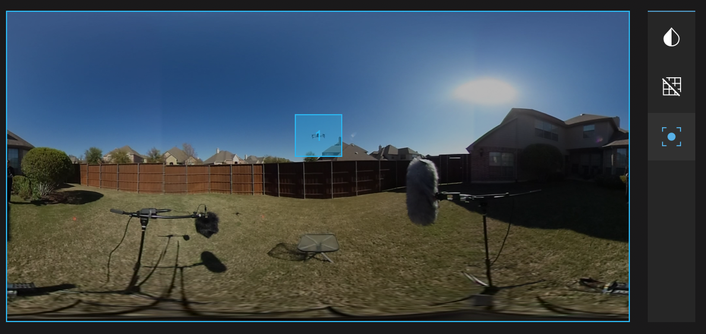
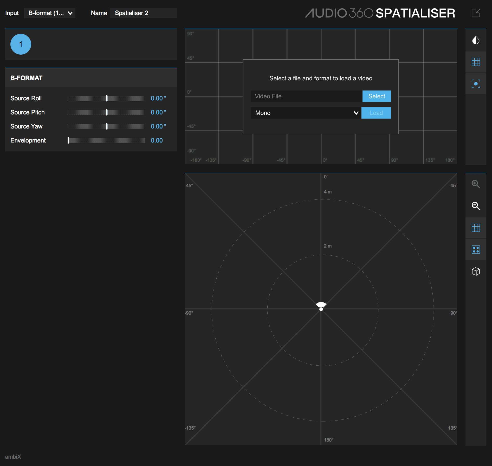
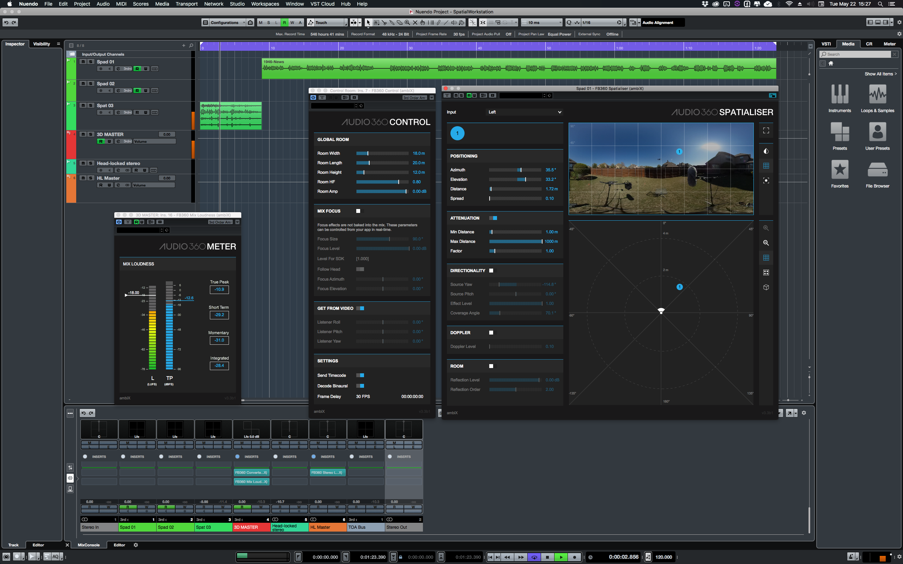
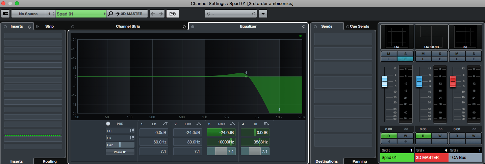
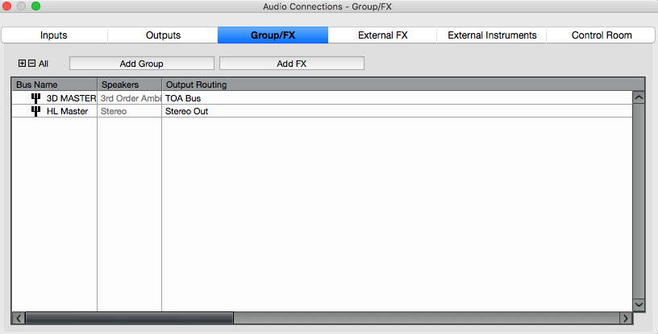
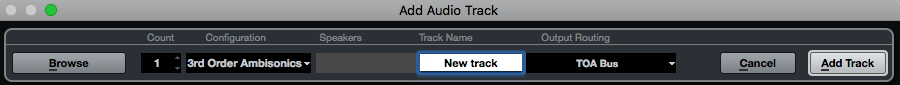
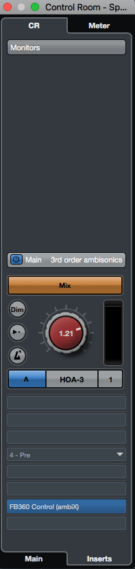
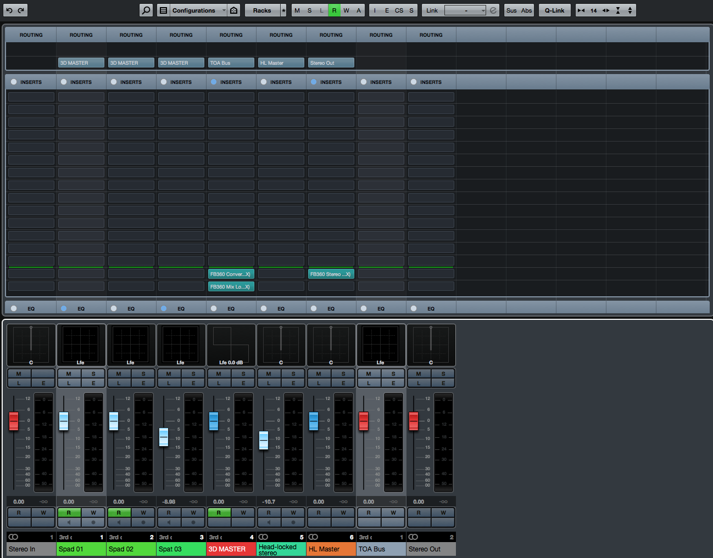

Support, Bug Reports and Help: Support Group
Introduction¶
What did you download?¶
Thanks for downloading the FB360 Spatial Workstation. The suite consists of plugins for DAWs, a VR video player and a cross-platform native engine that makes it easy to design and deliver content for cinematic VR and 360 video projects. For any issues, help or bug reports, go to the support group.
Binaural Audio¶
Real-time binaural audio works using HRTFs (or Head Related Transfer Functions). HRTFs work by filtering an audio signal to recreate the complex cues that help us, as humans, localise sounds. The cues are influenced by multiple factors, including the listening environment and the shape of your body, head and ears. In reality, we move our heads and reorient ourselves to localise sounds. We constantly try to bring sounds (or the objects that are creating such sounds) into our line of sight to overcome the ambiguity of spatialisation. Some of the long standing problems of binaural audio can be overcome with head tracking technology, as found on virtual and augmented reality devices. The FB360 Spatial Workstation allows you to position sounds in 3D space within your DAW and then export the mix into a range of formats, including Ambisonics used by popular 360 and VR video platforms and the .tbe format which can be used with the FB360 audio engine within your app to reconstruct a full 3D audio mix based on the user’s head orientation.
Ambisonics and B-format Audio¶
Ambisonics is a way of describing a full 3D sound field. It uses a number of interdependent audio tracks which can be decoded into various other end-user formats for consumption, e.g. binaural or 5.1, meaning only one Ambisonic recording or mix needs to be made for multiple different use cases. Another major feature is that an Ambisonic mix can be dynamically decoded to incorporate the listener’s head rotation. Currently, first and second order Ambisonics is widely in use. First order requires four channels of audio, which is often called B-format. Second order Ambisonics requires 9 channels of audio, the extra 5 channels providing greater spatial accuracy than standard first order. Care should be exercised as there are currently two different common channel ordering and weighting conventions for the B-format:
- The traditional B-format, as output by many commercial microphones, is defined using the channel ordering and weighting proposed by Furse and Malham (often abbreviated to FuMa). We will refer to this convention as B-format (FuMa).
- A more extendable convention to the traditional B-format (FuMa) has been proposed, know as ambiX. This is characterised by a different channel ordering and weighting. We will refer to this convention as B-format (ambiX). The Spatial Workstation uses 2nd or 3rd order ambiX as the output of the Spatialiser plugin and for exporting the spatial audio mix.
Using first order Ambisonic signals within a higher order Ambisonic field can result in the lower order signal sounding more smeared out and diffuse. To counteract this, a gain adjustment is required to optimise the FOA signal for playback as part of a second order Ambisonic field. When using the spatialiser plugin in first order B-format mode an additional gain boost is applied to the XYZ channels of the first order signal. This gain is automatically applied when the Envelopment value is set to its default of 0.1. If you require no gain adjustment, e.g. if the main output of your project is to be in first order, then you can undo this gain by setting the envelopment slider to 0.27.
The Converter plugin also allows for converting up Ambisonic orders with a gain that can be applied to the upper harmonics. Please see the FB360 Converter plugin section for more details.
Depending on how your recorded your B-format audio you may need to rotate it: see Ambisonic Input Controls for details.
Technical details¶
The plugins automatically detect the type of Ambisonics-capable track that they are placed on. For DAWs like Pro Tools you explicitly select the type of Ambisonics track and the plugins will detect this. For DAWs like Reaper where you select the track channel count, rather than the explicit type of track, the plugins detect the track channel count and operate in the highest Ambisonic order allowed by that number of channels. 2nd order Ambisonics requires 9 channels and 3rd order Ambisonics requires 16 channels.
The Ambisonic field is defined on a set of 3D axes (X, Y, Z). For a listener at the centre of the field, the axis direction convention used is X: back to front, Y: right to left, and Z: bottom to top. The X, Y, Z Ambisonic channels contain information about the sound field along the corresponding axis (they essentially represent what a figure-of-eight microphone might pick up along that axis). The W channel can be thought of as an omni directional channel.
- B-format (FuMa) lists the channels in order: W, X, Y, Z. The W channel also has a -3 dB gain applied.
- The ambiX convention lists the channels using the Ambisonics Channel Number (ACN) ordering: W, Y, Z, X. The channels also use SN3D normalisation (which for first order Ambisonics simply means that the four channels have a uniform gain normalisation).
Room Modelling¶
A majority of the binaural solutions only take into account HRTF measurements made in an anechoic chamber. In reality, we listen to sounds in live environments that alter our sense of localisation. Real-time room modelling, with binaurally spatialised reflections can overcome this. A full real-time room modelling solution can be a CPU intensive process, but FB360 takes the best of both worlds. The room modelling algorithm in FB360 recreates only the reflections that are essential for a convincing 3D audio experience. The room modelling algorithm in FB360 generates the first few orders of reflections inside a simple room model. This helps greatly with the externalisation of sound sources and also improves some common binaural rendering problems such as front/back confusion and elevation perception.
You can control the level of these reflections as well as the reflection order (i.e. the number of individual reflections allowed in one reflection path around a room) using the sliders on the Spatialiser plugin. The size of the room being modelled is controlled globally in the Control plugin. These early reflections can be used effectively with any of your favourite reverberation plugins without any problems. Adding a small pre-delay to the reverb system (30-60ms) allows the early reflections to stand out and greatly enhance the spatialisation effect.
Getting Started¶
Requirements¶
- Compatible DAW:
- Pro Tools HD 12.8.2 and later comes bundled with the current Spatial Workstation AAX plugins
- Older versions of Pro Tools require version 2.2.0 or lower of the Spatial Workstation
- 64 bit VST based DAW such as
Reaper. 32 bit hosts are not supported.
- The VST based DAW must be able to support 9-channel tracks and buses for 2nd order Ambisonics and 16-channel tracks and buses for 3rd order Ambisonics
- Pro Tools HD 12.8.2 and later comes bundled with the current Spatial Workstation AAX plugins
- macOS 10.10+ or Windows 7+ 64 bit. 32 bit operating systems are not supported.
- Ensure that the OS, DAW and graphics drivers are up to date.
- A HMD is recommended but not compulsory. The following headsets are
supported:
- macOS: Oculus Rift DK1, Oculus Rift DK2
- Windows: Oculus Rift, HTC Vive
Setup (macOS)¶
AAX¶
For Pro Tools HD version 12.8.2 and above the Spatial Workstation AAX installer is automatically run by the Pro Tools HD installer. The following user files are installed:
- AAX Plugins in Mac HD/Library/Application Support/Avid/Audio/Plug-Ins/
- A Pro Tools HD example project in Applications/FB360 Spatial Workstation/Pro Tools HD
- Pro Tools HD template project and I/O settings in ~/Documents/Pro Tools
- A copy of this document in Applications/FB360 Spatial Workstation
Additional components need to be installed in order to use all the features of the Spatial Workstation:
- Download and run the FB360 Spatial Workstation AAX Addon installer (SpatialWorkstation-AAXAddon-3.3.pkg)
- The following user files are installed, depending on your choices
during the installation process
- VR Video Player in Applications/FB360 Spatial Workstation/Video Player
- Encoder app in Applications/FB360 Spatial Workstation/Encoder
VST¶
- Run the FB360 Spatial Workstation VST installer (SpatialWorkstation-VST-3.3.pkg)
- The following user files are installed, depending on your choices
during the installation process:
- VST 3 Plugins in Mac HD/Library/Audio/Plug-Ins/Audio/VST3
- VR Video Player in Applications/FB360 Spatial Workstation/Video Player
- Encoder app in Applications/FB360 Spatial Workstation/Encoder
- A Reaper template/example project in Applications/FB360 Spatial Workstation/Reaper
- A copy of this document in Applications/FB360 Spatial Workstation
For VST based DAWs, please consult your DAW documentation for information on setting plugin search paths
Setup (Windows)¶
AAX¶
For Pro Tools HD version 12.8.2 and above the Spatial Workstation AAX installer is automatically run by the Pro Tools HD installer. The following user files are installed:
- AAX Plugins in C:\Program Files\Common Files\Avid\Audio\Plug-Ins
- A Pro Tools HD example project in C:\Program Files\FB360 Spatial Workstation\Pro Tools HD
- Pro Tools HD template project and I/O settings in C:\Program Files\Avid\Pro Tools\Factory Content
- A copy of this document in C:\Program Files\FB360 Spatial Workstation
Additional components need to be installed in order to use all the features of the Spatial Workstation:
- Download and run the FB360 Spatial Workstation AAX Addon installer (SpatialWorkstation-AAXAddon-3.3-Win64.exe)
- The following user files are installed, depending on your choices
during the installation process:
- VR Video Player in C:\Program Files\FB360 Spatial Workstation\Video Player
- Encoder app in C:\Program Files\FB360 Spatial Workstation\Encoder
VST¶
- Run the FB360 Spatial Workstation VST installer (SpatialWorkstation-VST-3.3-Win64.exe)
- The following user files are installed, depending on your choices
during the installation process:
- VST3 Plugins in C:\Program Files\Common Files\VST3
- VR Video Player in C:\Program Files\FB360 Spatial Workstation\Video Player
- Encoder app in C:\Program Files\FB360 Spatial Workstation\Encoder
- A Reaper template/example project in C:\Program Files\FB360 Spatial Workstation\Reaper
- A copy of this document in C:\Program Files\FB360 Spatial Workstation
Working With The Tools¶
It is recommended that you read the information in Workflow before setting up your DAW.
For setting up a project in Pro Tools HD, see Using Pro Tools HD, for Nuendo 8.2 and onwards see :ref: Using Nuendo and for Reaper, see Using Reaper.
Workflow¶
The FB360 Spatial Workstation is divided into five major components:
- This plugin is meant to be instantiated on every audio channel. You can think of it as an advanced panner that helps you position audio in 3D space with binaural and room simulation algorithms. Behind the scenes, the panner plugin codes the audio into ambisonics with metadata that is then used to construct the full mix.
- This plugin should be instantiated on an aux channel. Ensure only one instance is present in your project. All tracks processed with the Spatialiser plugin must be routed to this auxiliary channel. The Control plugin also facilitates communication with the VR Video Player and controls parameters for room modelling.
- The player is a standalone app that communicates with the DAW to ensure good synchronisation with your project. This enables you to mix directly to the VR video while previewing and navigating the video in 360 degrees, either on your desktop or with a head-mounted display.
- The encoder converts the mix from your DAW into a variety of formats that can be uploaded to popular 360 video platforms or deployed with a VR app, including the .tbe format that can be decoded with the FB360 Audio Engine to achieve high quality spatial audio.
- FB360 Audio EngineThe audio engine can be integrated in a VR app. The mix designed in the DAW is reconstructed binaurally by taking head-tracking information from the VR device into account. The audio engine is not included with the Spatial Workstation.
Three additional utility plugins are included in the Spatial Workstation. The FB360 Converter plugin can be used to convert between different Ambisonic formats and rotate a spatial mix in your DAW. This plugin must be instantiated in the signal chain after the Spatialiser plugin but before the Control plugin. The two FB360 Loudness plugins can be used to approximate the overall loudness of your mix.
The workflow for mixing and delivering content can be divided into three major stages, as illustrated in the image below.

Design¶
The design stage is where you as a sound designer and mixer would spend most of your time. You will be using the FB360 Spatialiser and Control plugins in conjunction with the VR Player to mix in binaural in real-time. The tools have been developed to do all the heavy lifting behind the scenes so that you can focus on designing and delivering great content to a deadline.
Delivery¶
This is for the final mastering and delivery of content. The mix from the DAW is encoded into a format that the FB360 audio engine uses to reconstruct a binaural mix in real-time on the target device. All audio and metadata is compressed into a single file format that is designed specifically for mobile and desktop devices to ensure low CPU and memory usage. Alternatively, you can deliver your mix into other formats supported by 360 video and VR platforms. See Encoding Assets.
Components¶
FB360 Spatialiser¶

The FB360 Spatialiser plugin replaces the conventional DAW panner to give you full 3D positioning, distance attenuation and room modelling parameters. It must be the last plugin inserted on the audio channel. All audio processing (such as compression and equalisation) must happen before it. All channels with the Spatialiser plugin must be routed to an aux channel which has the FB360 Control plugin instantiated on it.
Parameters¶
- Input: The channels or format used for processing. In Pro Tools,
the available options depend on the number of channels supported by
the track (e.g. a stereo track will let you choose Left, Right,
Mixdown or Stereo but you cannot select other options which require a higher
channel count).
- Left: The left channel is used for processing
- Right: The right channel is used for processing
- Mixdown: A mono-mixdown of both channels is used for processing
- B-format (1st Order FuMa): For processing pre-recorded 4 channel, 1st order Ambisonics material in the Furse/Malham B-format.
- B-format (1st Order ambiX): For processing pre-recorded 4 channel, 1st order Ambisonics material in the ambiX format. This format is output by the Zoom H2n recorder in spatial audio mode.
- Stereo: For positioning both channels of a stereo file independently. All channels are used for processing.
- 4.0: For positioning 4 channels of a quad file independently. All channels are used for processing.
- 5.0: For positioning 5 channels of a 5.0 file independently. All channels are used for processing.
- 6.0: For positioning 6 channels of a 6.0 file independently. All channels are used for processing.
- 7.0: For positioning 7 channels of a 7.0 file independently. All channels are used for processing.
- B-format (2nd Order ambiX): For processing pre-recorded 9 channel, 2nd order Ambisonics material in the ambiX format.
- B-format (3rd Order ambiX): For processing pre-recorded 16 channel, 3rd order Ambisonics material in the ambiX format.
The following controls are available for all non B-format input audio. For Ambisonic B-format input skip to Ambisonic Input Controls.
- Azimuth: The position of the sound on the horizontal plane. 0 degrees is when the sound source is directly in front of the listener, 90 degrees is hard-right, -90 is hard-left and +/-180 is directly behind
- Elevation: The position of the sound on the vertical plane. 0 degrees is when the sound source is directly in front of the listener, 90 degrees is directly above and -90 is below
- Distance: The distance of the sound source from the listener in metres. Room modelling and distance attenuation parameters are affected by this value.
- Spread: The width or spread of the sound in space. A value of 0.1 results in the sound being treated as a point source. A value greater than 0.1 would create a diffused sound that is spread out in space and can also give the impression of a sound being closer to the listener.
- Attenuation: Enable or disable distance based attenuation of the
sound
- Minimum Distance: The distance value after which the amplitude attenuation starts
- Maximum Distance: The distance value after which the amplitude attenuation stops
- Factor: The attenuation curve. A value of 1 is a 6dB drop every time the distance is doubled (this is how most sounds work in the ’real’ world). A value greater than 1 results in a steeper rolloff.
- Doppler: Toggle Doppler effect. This also enables delayed time of
flight, i.e, the sound is delayed based on its distance from the
listener. This can greatly improve the localisation quality if room
modelling is enabled
- Doppler Level: Intensity of the Doppler effect.
- Room: Enable or disable room modelling. This can greatly enhance the
spatialisation effect and quality. See Room Modelling for more information. The room
parameters can be controlled through the FB360 Control plugin.
- Reflection Order: The number of individual reflections allowed in one reflection path around a room. A higher value results in more reflections.
- Reflection Level: The level of the reflections.
- Directionality: Enable or disable the directional effect of sound sources. Activating this option gives the source a directionality cone, giving an approximate representation of how a real-world sound source might emanate in a non-uniform (non-omnidirectional) pattern. The effect models the increasing high frequency loss observed when a source with a directional response is heard from an increasing off-axis listening angle. It is recommended that the directionality feature is used in conjunction with the room reflections for maximum effect quality. The default settings are optimized for voice.
- Source Yaw: Adjusts the yaw of the sound source
- Source Pitch: Adjusts the pitch of the sound source
- Effect level: Intensity of the Directionality effect
- Coverage Angle: Defines the viewing angle range within which the source signal is left largely unchanged. As the viewing angle increases past this point the high frequency attenuation increases.
- Panners: The Spatialiser includes an equirect video panner and a 2D (top-down view) panner.
- Equirect Panner: The equirectangular video panner displays a video frames from the FB360 Video Player. Any video that is loaded into the FB360 Video Player is automatically displayed within the panner. The horizontal axis of the panner maps azimuth, while the vertical axis maps elevation. The equirect panner also includes an object tracker to automatically track and automate objects in a scene. See Object Tracker.
- 2D Panner: The interface can be used to position sounds on a 2D map with a top-down view. The panner is linked to the Azimuth and Distance sliders.
- Arrange: Arranges the channels into a speaker configuration determined by the Input setting
- Channel Tabs: Organised on the top-left side of the plugin these contain the parameters for each channel. Clicking on a dot in the panner interface will open up the corresponding channel’s tab.
Panning¶
The Spatialiser plugin includes an equirect video panner (top-right of the plugin) and a 2D panner (bottom-right of the plugin). Both panners can be used simultaneously to accurately position sounds in 3D space.
The equirect panner mirrors what is displayed in the FB360 Video Player. When a video is loaded in the FB360 Video Player, it will be automatically shown in the equirect panner.
Typically most 360 videos are stored in an equirectangular projection (similar to how panoramic photos are saved). This is a “flattened” projection of a 360 video where typically the horizontal axis maps to azimuth and the vertical axis maps to elevation, with the centre of the scene at the centre of the equirect display.
The 2D panner on the other hand shows a top-down view of the scene. While the equirect panner does not show distance, the 2D panner can be used to automate distance effects. The centre of the 2D panner is where the camera is in the scene.
Toolbar And Key Commands
The toolbar to the right of the equirect panner has the following options:
- Toggle Size: The size of the plugin can be toggled to show a larger view. This is useful for more precise panning. Key Command: S.
- Opacity: The equirect panner draws a darkened overlay of the video to help make the sound objects more visible. The opacity of this overlay can be controlled with the Opacity slider.
- Grid: The grid overlay can be toggled on and off. Key Command: G.
- Tracking: Toggle object tracking for the selected object
The toolbar to the right of the 2D panner has the following options:
- Zoom In/Out: Zoom in and out of the 2D panner or 3D visualisation
- Grid: The grid overlay can be toggled on and off. Key Command: G.
- Arrange: When working with multichannel material, the Arrange button can be used to arrange the sound sources as virtual speakers.
- Toggle 3D View: Show a 3D view to visualise all objects, with their directionality, in a scene.
- Rotate: Rotate the 3D view. Alt-click the button to reset.
Object Tracker¶
{kind=link}
The Equirect Panner also includes an object tracker to automatically track and automate objects in a scene. To track an object:
- Ensure a video is loaded
- In the Equirect Panner’s toolbar, toggle the “Tracking” button
- The object in the Equirect Panner will be shown as a square, which represents the tracking area
- Resize and move the tracking area to fit around the object you want to track. This area can be resized by clicking and dragging around its corners
- Once the tracking area has been resized around the area you want to track, record enable the Azimuth and Elevation parameters
- Press play in your DAW for the object tracker to automatically follow the object and write automation
Best Practices:
- The tracker will be more effective if you work with short time segments
- The tracker looks for differentiating features. Often a smaller area with more differentiating features can result in better tracking performance
- The tracker can adapt to changes in distance/scale of the object, but might need to be corrected for drastic changes in size and shape
- Correct the tracker by pausing playback, refitting the tracking area around the object and hitting play again
Using Multiple Input Channels¶
You can use the FB360 Spatialiser to position each channel of a multichannel track independently. This can be used for playing back a multichannel mix or using a multichannel reverb by inserting the Spatialiser plugin on an aux channel.
- Set up a track with the following settings. The routing of
multichannel audio behaves differently depending on your DAW:
- Pro Tools: make sure the number of track channels matches the audio file you wish to use (e.g. 5.0 track for 5.0 audio file)
- Reaper: set the number of channels for the track to 10, regardless of the number of channels in your input audio
- Set the Input in the FB360 Spatialiser plugin to the appropriate number of channels for your audio file
- Import your multichannel recording onto the track
- You can position the individual channels by dragging the numbered dots in the panner or by using the parameters within the corresponding tab on the left
- Click Arrange to automatically position the channels into a speaker configuration as determined by the Input setting
Ambisonic Input Controls¶
When an Ambisonic input format is selected, the FB360 Spatialiser plugin includes sliders to re-orient an Ambisonic recording. For example, if the default perspective of the 360 degree video (i.e, the perspective with which the video starts) does not match the recorded sound field (if the microphone was positioned differently on set, for example), the pitch-yaw-roll sliders can be used to re-orient the sound field.
- Source Roll: Tilt the B-Format recording (like tilting your head from side to side).
- Source Pitch: Rotate the B-Format recording in the vertical plane or up-down. A positive value is up, while a negative value is down.
- Source Yaw: Rotate the B-Format recording in the horizontal plane or left-right. A positive value is right, while a negative value is left.
- Envelopment: Control the diffuse field of the sound. This controls the gain weighting of the omnidirectional component against the directional harmonics. For a first order signal input setting this to 0.27 will give an equal gain to all channels.
FB360 Converter¶
The Converter plugin functions as a useful utility for converting Ambisonic audio to other formats. It also has the ablity to rotate the sound field for occasions where a spatial mix or sub-mix needs to rotate to follow what is happening in a scene, or perhaps an Ambisonic mix already exists but is incorrectly oriented relative to the video and needs to be corrected.
The Converter plugin should be inserted in the signal flow after the FB360 Spatialiser plugin and before the FB360 Control plugin. Input to the FB360 Converter plugin can either be B-format ambiX or (now deprecated) Spatial Workstation 8 channel spatial audio. Note however that the Spatial Workstation 8 channel hybrid format can only undergo yaw rotation due to a limitation with the format. The output can be set to Binaural, Spatial Workstation 8 channel or B-format ambiX of various orders.
You can locate the plugin in various places in the signal chain, or a combination thereof:
- on a single DAW track after the FB360 Spatialiser plugin in order to rotate all sources contained on that track (e.g. to rotate a full 5.1 mix without having to automate each speaker source separately);
- on an Ambisonics bus receiving the output from multiple FB360 Spatialiser plugin tracks. This would rotate the spatial mix for all of these tracks;
- on the same track as the FB360 Control plugin (must be located before the FB360 Control plugin) to rotate the entire spatial mix and pass the spatial audio on to the Control plugin.
{kind=link}
Parameters¶
- Roll Rotation: Set the number of degrees to rotate the spatial mix input by.
- Pitch Rotation: Set the number of degrees to rotate the spatial mix input by.
- Yaw Rotation: Set the number of degrees to rotate the spatial mix input by.
- Cross Order Gain: in order to get optimum playback spatialisation, it is necessary to add a small gain to some of the upper channels of an Ambisonic track of a certain order when that track is to be played back through a renderer expecting a higher order input. When the Converter detects that you are converting up orders (e.g. having a 2nd order input to 3rd order output) the ‘cross order gain’ slider becomes active and allows you to apply a gain to the upper harmonics to tune in the optimum spatialisation with a higher order renderer. Note that you should always mix to the renderer type that your final mix will be played through - i.e. do not apply the cross order gain to optimise playback with the 3rd order renderer if your final playback medium is only 2nd order.
The rotation and cross order gain parameters in the FB360 Converter plugin can be automated and controlled via a control surface.
8 Channel Output¶
The Spatial Workstation 8 channel hybrid Ambisonics output format may be required for some projects which use older FB360 applications which do not support ambiX formats. However, this format is deprecated and we would recommend using ambiX formats where possible. Care must be taken when exporting an 8 channel mix as Pro Tools (and possibly other DAWs) may wrongly assume that it is a 7.1 mix and export the 8 channels in a mixed up order. For exporting from Pro Tools you can correct for this issue by checking the ‘From Pro Tools’ box in the Encoder application. When exporting the mix from the master track, ensure that the Converter step does not get applied twice - this might happen if you first bounce the audio to that track and then export/render with effects applied.
FB360 Control¶

The FB360 Control plugin must be instantiated on an aux channel that receives audio from all the other spatialised channels in your project. Make sure you have only one instance of the plugin in your project. All audio processing (such as mastering, compression and equalisation) must be applied to the signal before it reaches the plugin.
Note that whilst the room size is controlled globally here from the control plugin, the room modelling reflections are mixed into the Ambisonics output from the Spatialiser plugin and thus exist in the export mix, along with any other effects applied before the Spatialiser plugin. The focus and listener orientation controls are provided for mixing and previewing your audio and do not get applied to the spatial audio export mix: focus and listener orientation are applied in real-time during video playback.
Parameters¶
- Room
- Room Width: A global setting that changes the width of the room in metres. All sounds that have Room enabled in the FB360 Spatialiser will be affected by this.
- Room Length: A global setting that changes the length of the room in metres. All sounds that have Room enabled in the FB360 Spatialiser will be affected by this.
- Room Height: A global setting that changes the height of the room in metres. All sounds that have Room enabled in the FB360 Spatialiser will be affected by this.
- Room Amp: Amplitude of early reflections in the room
- Room HF: High frequency absorption within the room. 1 is maximum high frequencies.
- Focus: Focus effects are not baked into the mix. These parameters
can be controlled from your app in real-time using the FB360 Audio
Engine or added to an FB360 video as metadata using the Encoder.
- Mix Focus: If enabled, an area of the mix will be defined where sounds are played at the normal level. Sounds outside that region are attenuated.
- Follow Head: If enabled, the focus orientation will follow the the listener’s gaze.
- Focus Azimuth, Elevation: The orientation of the focus, if Follow Head is disabled. These values are relative to the listener point of view.
- Focus Size: Angle controlling the size of the area included within the focus.
- Off-focus Level: Attenuation level of the mix outside of the the focus area.
- Listener
- Get From Video: If enabled, the listener’s orientation is automatically queried from the VR Video Player.
- Listener Roll, Pitch, Yaw: The orientation of the listener in 3D space. These values are automatable if Get From Video is disabled.
- Misc
- Send Timecode: If enabled, the timecode from the DAW session is sent to the VR Video Player
- Frame Delay: Creates a delay for the VR Video Player in relation to the DAW. Delays can be entered either as a timecode or as a number of frames that will then be converted and displayed as a timecode.
- Decode Binaural: If enabled, the mix is decoded to binaural.
Using Focus Control¶
The focus effect is not baked into the mix and can be enabled on Facebook 360 videos or used in real-time within your VR application. The parameters available in the Control plugin are only for preview. To enable the focus effect on Facebook 360 videos the parameters must be set using the Encoder, see Encoding For Facebook 360 for instructions.
To get focus control working within your VR app:
- Use the FB360 audio engine in your app and follow the instructions provided with the engine
- Specify the value of the Focus Size and Off-focus Level For Engine (displayed in the control plugin) in the FB360 audio engine API

The image above of the spatialiser plugin illustrates the result of the focus effect when focus size is set to 45°. Any parts of the mix that are in the clear cone will continue to be played back at full volume whereas all the areas that are greyed out will be attenuated. As the focus area moves with the listener’s gaze (unless ‘Follow Head’ is disabled) it means the region of the video that the listener is looking at becomes more prevalent in the mix.
FB360 Loudness¶
An important facet of spatial audio is that it is impossible to predict where the listener will be looking, and therefore the precise loudness of a mix as heard by the listener cannot be determined at the mixing or mastering stage. There are two loudness plugins in the Spatial Workstation which work together on the 3D master track and the head-locked stereo track to approximate the overall loudness of your mix. The Loudness plugins provided here give a guideline for the maximum possible loudness and true peak value in your mix, as if the listener were always looking in the “loudest” direction. The loudness plugins follow a similar methodology to the EBU-128 technical specification which details a method for measuring perceived loudness using the units ‘Loudness Units Full Scale’ (LUFS).


The FB360 Mix Loudness plugin will function on its own if your mix only has Ambisonic audio tracks. If you also have a head-locked stereo track you will need to add the FB360 Stereo Loudness plugin to the stereo master track. The FB360 Stereo Loudness plugin does not have any visible metering itself, however it sends loudness information to the FB360 Mix Loudness plugin so that the combined directional audio and head-locked audio measurements are displayed in the FB360 Mix Loudness plugin. Note that you are only allowed to have one instance of the FB360 Stereo Loudness plugin. We recommend taking a look at the template projects provided with the Spatial Workstation installation to help with the correct placement of these plugins.
Because the metering happens before the renderer and independently of head rotation, there might be small differences between the loudness and peak readings in these plugins to that of a standard loudness or peak meter placed after the control plugin. Great care has been taken to ensure that the FB360 loudness meter gives levels consistent with standard metering practices.
The type of loudness that the meter displays indicates the time window over which the loudness was calculated. A shorter window means that the loudness value responds quickly to the audio, whereas a longer window responds more slowly and can be thought of as closer to an average loudness value. The integrated loudness is calculated for all time (since it was last reset) and can be thought of as the overall loudness of the audio. In this sense, an entire mix’s loudness can be identified by this single integrated loudness number. The following table shows the window size for each type of loudness:
Loudness Type Window Size Momentary 0.4 seconds Short Term 3 seconds Integrated all time
The two bars show momentary loudness (LUFS) and true peak (dBFS) approximations for your mix. Along the right these measurements are repeated with text read-offs in addition to the short term loudness and integrated loudness. Clicking on the true peak or integrated loudness boxes will reset those measurements. The loudness bar on the left hand side also has a marker which can be dragged to a particular position to be used as a guide. This marker can also be set by clicking the number text.
The ‘True Peak’ value shows a maximum theoretical true peak value for the mix; it doesn’t mean that you will always hit that peak during playback because it depends on where the listener is looking. But it should be treated as if it were the peak value for your mix and you should avoid clipping as usual. The peak read-off box on the right will always stick to the highest peak value that has been measured since the peak meter was last reset. If the peak level goes above 0 dBFS then the clip indicator at the top of the peak meter and the read-off text will turn red. The peak metering is reset by clicking on the red indicator or on the read-off text.
Integrated loudness is measured following a similar method as the EBU-128 specification. It displays a theoretical maximum integrated loudness for your mix. The integrated loudness can be reset by clicking on the read-off text.
Note that for Pro Tools it is necessary for the Mix Loudness plugin to disable the ‘dynamic processing’ feature. This will disable the dynamic processing for the entire signal path into and out of the Mix Loudness plugin, which in some cases may cause Pro Tools to be more CPU intensive.
VR Video Player¶

The Video Player is installed in Applications/FB360 Spatial Workstation/Video Player on macOS and C:\Program Files\FB360 Spatial Workstation\Video Player on Windows. Read Opening A Video and Video Format And Codec for more information on setting up the player.
The Video Player can be used in either Slave or Standalone mode.
Slave Mode¶
Slave mode synchronises video playback with your DAW.
- Load video file: Browse for or drop the video file that needs to be opened
- Video Format
- Mono: Non-stereoscopic video. This is usually a video that has a single display
- Over-under: Stereoscopic video, where the video for the left eye is displayed in the top-half and the video for the right eye is displayed in the bottom-half
- Side-by-side: Stereoscopic video, where the video for the left eye is displayed in the left-half and the video for the right eye is displayed in the right-half
- Display Mode
- Desktop: The video will be played back in a format that can be viewed on a regular computer display
- VR: The video will be displayed in a format that is compatible with Oculus Rift DK1/DK2 on macOS or Oculus Rift/HTC Vive on Windows
- Connect to DAW: The computer/DAW the video player is currently connected to. The Video Player optionally can be run on a computer that is different from the one hosting the DAW.
- Open: Opens the video in a new window. The player by default works as a slave and the video will not playback until it receives timecode from the DAW.
Remote DAW Connection¶
The Video Player and the Control plugin use Bonjour to easily establish a connection whether they are on the same host or different hosts on the same network, even hosts using different operating systems. For example, the Video Player can be run on a Windows host with a VR headset, and the DAW can run on a macOS host.
Each detected host with a Control plugin will be listed in the “Connect to DAW” drop-down. The network interface is displayed in parentheses; for acceptable video latency ensure that you use a wired Ethernet connection, not a wireless connection.
If the expected host does not show up in the drop-down, here are some troubleshooting steps:
- Ensure that the DAW is in fact running with the Control plugin loaded.
- Ensure that the hosts are on the same local area network.
- Ensure that the firewall on both hosts is configured to allow network traffic on at least UDP ports 6100, 5125, and 5353. (If in doubt, temporarily disable the firewalls entirely.)
- On Windows, the Bonjour service is installed by the Spatial Workstation installer. If you opted out, or you or your administrator has since disabled that service, you will need to reenable or reinstall it. You may reinstall the Spatial Workstation, or download and install Bonjour Print Services for Windows from Apple.
Standalone Mode¶
Standalone mode is independent of a DAW and is to preview an encoded .tbe file with a video or to play back videos encoded in the experimental FB360 Matroska format (see Encoding Assets).
Load or drop video file: Browse for the video file that needs to be opened
Video Format
- Mono: Non-stereoscopic video. This is usually a video that has a single display
- Over-under: Stereoscopic video, where the video for the left eye is displayed in the top-half and the video for the right eye is displayed in the bottom-half
- Side-by-side: Stereoscopic video, where the video for the left eye is displayed in the left-half and the video for the right eye is displayed in the right-half
Display Mode
- Desktop: The video will be played back in a format that can be viewed on a regular computer display
- VR: The video will be displayed in a format that is compatible with Oculus Rift DK1/DK2 on macOS or Oculus Rift/HTC Vive on Windows
Load .tbe file: Browse for the .tbe file to be opened. Note that this is not required when opening a FB Matroska encoded video.
Focus: Enable the focus effect (see Using Focus Control). When loading a FB360 Matroska video file that has focus enabled the focus parameters will automatically be set to match the video’s metadata.
- Focus Size: Angle controlling the size of the area included within the focus.
- Off-focus Level: Attenuation level of the mix outside of the the focus area.
Open: Opens the video in a new window.
Using Pro Tools HD¶
An example Pro Tools HD project and template are automatically installed on your computer. The example project is located in the installation folder, along with a backup copy of the Pro Tools HD template and I/O settings. Use the example project to familiarise yourself with the FB360 Spatial Workstation.
Creating A New Project¶
To create a new project with the provided template and I/O options with Pro Tools 12. See this Knowledge Base article for creating a new project in Pro Tools 10 and 11 using version 2.2 of the Spatial Workstation.
- Open Pro Tools HD
- Create a new project
- Select Create From Template
- Choose Post-Production from the Template Group drop-down menu
- Select FB360 3rd Order Ambisonics from the list of options
- Set the sample rate and bit depth of your session (see Sample Rate Considerations for information about target sample rates)
- Select FB360 3rd Order Ambisonics from the I/O Settings drop-down menu
- Click Create

Project Structure¶
The FB360 Spatialiser plugin accepts mono, stereo or multi-channel inputs and outputs 9 or 16 channels, depending on whether the plugin is on a 9 channel 2nd order Ambisonic track or 16 channel 3rd order Ambisonic track. This multi-channel audio must be eventually routed to the FB360 Control plugin to enable monitoring of the sound field by decoding to binaural. Make sure you have only one master channel and instance of the FB360 Control plugin in your project. You can create as many tracks with the FB360 Spatialiser plugin as your project requires. There are no limitations. You can also use the separate FB360 Converter plugin to rotate the Ambisonic audio output from the FB360 Spatialiser plugin, or any Ambisonics sub-mix before being input to the FB360 Control plugin.
The template project consists of spatialised tracks that have the FB360 Spatialiser plugin inserted and ’normal’ stereo audio tracks. The spatialised tracks are meant for full binaural panning and are routed to a channel called 3D Master, while the stereo tracks are meant for head-locked stereo panning and are routed to a channel called Head-locked Master. It is recommended that you stick to this project structure as it makes it easier to export, debug and deliver mixes. Any audio track in your project must either be routed to 3D Master or Head-locked Master.
Mastering¶
The template project includes two master channels: 3D Master for all 3D elements in the mix and Head-locked Master for all non-spatialised elements in the mix. The 3D Master channel is a master auxiliary channel that receives audio from all FB360 Spatialiser channels. Use it just as you would use a master fader master volume automation, mastering EQ, etc. The Head-locked Master channel functions in a similar way, but receives audio from all head-locked stereo tracks. Your mastering chain would need to be applied separately on both masters.
3D And Head-locked Stereo¶
It is quite common that some elements in the mix such as the background score or voice overs might not need to be spatialised in 3D or react to head-tracking. The two masters, 3D Master and Head-locked Master facilitate this workflow. Note: some spatial audio formats do not support head-locked stereo/non-spatialised audio.
Mixing¶
For the spatialised tracks, make sure that the FB360 Spatialiser is the last plugin in the chain (except if you use the FB360 Converter plugin, which must be located in the signal chain after the FB360 Spatialiser plugin, but before the FB360 Control plugin). Panning can be controlled and automated through either the sliders or the 2D panner. All parameters in the FB360 Spatialiser plugin can be automated and controlled via a control surface.
Sub-Mixes¶
You can create sub-mixes by routing audio from FB360 Spatialiser channels to an Ambisonics aux channel. This aux channel would then need to be routed to 3D Master.
Previewing Your Mix¶
The audio from the 3D Master aux is routed to the Control Plugin aux which has the FB360 Control plugin instantiated on it. The Control plugin is used for setting global parameters (such as room modelling) and for communicating with the video player. See FB360 Control for more information.
Creating New Tracks¶
To create a new spatialised or head-locked stereo track, duplicate one of the existing tracks in the project. If you need to manually create and setup a spatialised track:
- Create a new mono or multichannel track
- Instantiate the FB360 Spatialiser by going to multichannel plug-in/Soundfield/FB360 Spatialiser (ambiX) in the insert plugin drop-down menu
- Set the track’s output to the To 3D Master bus
When using a multichannel audio file make sure the number of track channels matches the number of channels on the audio file.
Sample Rate Considerations¶
You can create your Pro Tools HD project with any sample rate of your choice, although, 48000Hz is recommended.
Ambisonics/B-format¶
{kind=link}
The FB360 Spatialiser plugin can also handle Ambisonics material in either the B-Format (FuMa) or B-format (ambiX) formats. Here’s how you get it working:
- Create a new Ambisonics track matching the format of your input audio
- Insert the FB360 Spatialiser plugin
- Set the track’s output to the To 3D Master bus
- In FB360 Spatialiser, set the Input drop-down menu to the B-format option corresponding to your source material
- Import your multi-channel B-format recording onto the track
- The B-format data will automatically be spatialised to binaural by the FB360 Control plugin
For more information about Ambisonics and B-formats see the Ambisonics and B-format Audio section or for information on rotating the B-format recording, see Ambisonic Input Controls.
Working With Video¶
Once you have the video opened and loaded in the VR Video Player, playing back your session in Pro Tools HD should automatically synchronise playback of the video. Pro Tools HD is always master and the video player is slave. Make sure your project or your first frame of action starts at 00:00:00:00. See Opening A Video and Navigating A 360 Video for more information.
Exporting A Mix¶
To export your spatialised and head-locked stereo mix stems:
- Record enable the 3D Stem and Head-locked Stem tracks. Make sure they are muted.
- Record your session
- Export the regions in the 3D Stem and Head-locked Stem tracks by selecting the regions and pressing Cmd + Shift + K on your keyboard. Ensure the export format is set to Interleaved.
The plugins produce spatial audio in the ambiX format. In some cases you may need to deliver a mix using the older Spatial Workstation 8 channel format, see the 8 Channel Output section.
Both files will now need to be processed and coded before being deployed to the app using the external encoder application. See Encoding Assets.
Using Nuendo¶
An example Nuendo 8 project and template are automatically installed on your computer. The example project is located in the installation folder. Use the example project to familiarise yourself with the FB360 Spatial Workstation.
{kind=link}
Creating A New Project¶
To create a new project with the provided template with Nuendo 8.2:
- Open Nuendo 8.2
- Create a new project
- Navigate to the templates tab
- Select the FB360 Spatial Workstation (TOA) template
- Select the disk location and Project folder at the bottom and Click Create
- Select Audio Connections ( or hit F4) and select the Outputs tab and make sure that the Stereo Out output has the right audio device selected
Project Structure¶
The project consists of spatialised tracks that have the FB360 Spatialiser plugin inserted as a panner plugin and ’normal’ stereo audio tracks. The spatialised tracks are meant for full binaural panning and are routed to a Group Channel called 3D MASTER, while the stereo tracks are meant for head-locked stereo panning and are routed to a Group Channel called HL MASTER. It is recommended you stick to this project structure as it makes it easier to export, debug and deliver mixes. Any audio track in your project must either be routed to 3D MASTER or HL MASTER.
The Nuendo Control Room is used for auditioning a mix, and this is where the FB360 Control Plugin is inserted as a Post-Fx effect. Make sure you have only one instance of the FB360 Control plugin in your project. Each track in Nuendo must be configured as Third order Ambisonics, but can accept mono, stereo or 4/9/16 channel sources. There are no limitations to the number of such Third order tracks you can create. You can also use the separate FB360 Converter plugin to rotate a 16 channel audio output from the FB360 Spatialiser plugin, or any 1st or 2nd order Ambisonics (ambiX) sub-mix before being routed to the Control Room.
Creating a new bus¶
The FB360 Spatial Workstation follows this audio scheme
3rd order track → Group Channel → 3rd order bus
{kind=link}
To create a third order Bus
- Click Studio → Audio Connections or hit F4 to open the Connections window.
- Navigate to Outputs and then Add Bus
- Add a Third order Ambisonics bus
- Right click on the Bus name, and select Set “” as Main Mix
- This is the master bus where the 3D Master Group Channel will be routed to, and the Control plugin will render the ambisonic signal routed to this bus.
{kind=link}
Creating new group channels¶
Nuendo uses Group Channels for submixes. The 3D Master Group Channel in the template is where all the individual third order tracks are routed, and used as a master mix and then routed to the main TOA bus. If you wish to create more submix channels
{kind=link}
- Click Studio → Audio Connections or hit F4 to open the Connections window.
- Navigate to Group/FX tab
- Click on Add Group and create a Third Order Ambisonics configuration based Group Channel, which is routed to the main TOA bus. The template already has such a bus created.
Creating New Tracks¶
To create a new spatialised or head-locked stereo track, duplicate one of the existing tracks in the project. If you need to manually create and setup a spatialised track:
{kind=link}
- Create a new track
- Select Third Order Ambisonics as Track Configuration, and Output Routing to 3D Master Group
- Select Stereo Track configuration and Output Routing to HL Master Group for all non-spatialised head-locked stereo tracks
Panner plugin¶
The Spatialiser plugin is used as a panner plugin in Nuendo 8.2 onwards, as opposed to a post-fx plugin insert in a track. It can still be used in either mode, but Nuendo recommends that spatial plugins are used as a panner plugin instead.
To add or edit a panner plugin
- Open the Mixer panel (Either in the main workspace at the bottom, or by bringing up the session mixer by hitting F3)
- On an existing track with the Spatialiser plugin, double click on the panner area to bring up the plugin
- On a new track, right click on the panner area and select FB360 Spatialiser
{kind=link}
The advantage is that a panner plugin is automatically used as a post-FX plugin and you won’t need to re-order it to be the last plugin in the chain manually. However, if the spatialiser plugin is used as a track Insert, make sure it is the last plugin in the chain.
Control Room¶
The FB360 Control Plugin is inserted as an effect in the Control Room
{kind=link}
Refer to the main Nuendo documentation on how the Control Room is used to audition mixes separately.
Mastering¶
The template project includes two Master groups channels: 3D MASTER for all 3D elements in the mix and HL MASTER for all non-spatialised elements in the mix. The 3D MASTER group channel is a master auxiliary channel that receives audio from all FB360 Spatialiser channels. Use it just as you would use a master fader master volume automation, mastering EQ, etc. The HL MASTER channel functions in a similar way, but receives audio from all head-locked stereo. Your mastering chain would need to be applied separately on both masters.
Mixing¶
For the spatialised tracks, use the FB360 Spatialiser plugin as a panner plugin. In the case of the Converter plugin, it must be located in the signal chain after the FB360 Spatialiser plugin, but before the FB360 Control plugin). Panning can be controlled and automated through either the sliders or the 2D panner. All parameters in the FB360 Spatialiser plugin can be automated and controlled via a control surface.
{kind=link}
Ambisonics/B-Format¶
The FB360 Spatialiser plugin can also handle and decode 1st order Ambisonics material in either the B-Format (FuMa) or B-format (ambiX) formats. It can also handle 2nd or 3rd order Ambisonics material in B-Format(ambiX). Here’s how you get it working:
- Create a a new track with the settings specified in Creating New Tracks or duplicate an existing track
- Add the Spatialiser plugin as a panner plugin, if one isn’t added already.
- In FB360 Spatialiser, set the Input drop-down menu to B-format (1st Order FuMa) or B-format (1st Order, 2nd Order or 3rd Order ambiX) depending on your source material
- Import your 4/9/16 channel B-format recording into the track
- The B-format data will automatically be spatialised to binaural by the FB360 Control plugin on the main TOA Bus through the Control Room
or more information about Ambisonics and B-formats see the Ambisonics and B-format Audio section or for information on rotating the B-format recording, see Ambisonic Input Controls.
Working With Video¶
Once you have the video opened and loaded in the VR Video Player, playing back your session in Nuendo should automatically synchronise playback of the video. Nuendo is always master and the video player is slave. See Opening A Video and Navigating A 360 Video for more information.
Exporting/Bouncing A Mix¶
To export your spatialised or head-locked stereo mix:
- Set the project Left and Right locators to mark the time selection that you want to export
- Click File → Export → Audio Mixdown
- Select either the TOA Bus or Stereo Out Bus on the left (or both at the same time by checking the Channel Batch Export box
- Choose any other option as necessary and select the Output directory and file names, and then click Export
Both files will now need to be processed and coded before being deployed to the app.
Using Reaper¶

Open the example Reaper project SpatialWorkstation.RPP installed in the FB360 Spatial Workstation installation folder. Go to in the menu bar. Specify a name and location for your project. It is recommended that you use SpatialWorkstation.RPP as a template for all projects that use the Spatial Workstation plugins.
Project Structure¶
The project consists of spatialised tracks that have the FB360 Spatialiser plugin inserted and ’normal’ stereo audio tracks. The spatialised tracks are meant for full binaural panning and are routed to a channel called 3D MASTER, while the stereo tracks are meant for head-locked stereo panning and are routed to a channel called HL MASTER. It is recommended you stick to this project structure as it makes it easier to export, debug and deliver mixes. Any audio track in your project must either be routed to 3D MASTER or HL MASTER.
The CONTROL PLUGIN audio channel is a master auxiliary channel with the FB360 Control plugin inserted. Make sure you have only one master channel and instance of the FB360 Control plugin in your project! No additional plugins should be added to the CONTROL PLUGIN channel!
Creating New Tracks¶
To create a new spatialised or head-locked stereo track, duplicate one of the existing tracks in the project. If you need to manually create and setup a spatialised track:
- Create a new track
- In the Mixer view, click on the ’ROUTING’ button
- Set Track Channels to 10 or 16 depending on if you are working in 2nd or 3rd order Ambisonics respectively. (in 2nd order mode the Spatial Workstation will only use the first 9 channels out of the 10)
- Click on the Add New Send.. drop down menu and select 3D MASTER
- Under the options for this newly created send, set Audio to for 2nd order Ambisonics or for 3rd order Ambisonics.
- Uncheck/disable the Master/parent send option at the top-left of the window

Mastering¶
The template project includes two master channels: 3D MASTER for all 3D elements in the mix and HL MASTER for all non-spatialised elements in the mix. The 3D MASTER channel is a master auxiliary channel that receives audio from all FB360 Spatialiser channels. Use it just as you would use a master fader master volume automation, mastering EQ, etc. The HL MASTER channel functions in a similar way, but receives audio from all head-locked stereo. Your mastering chain would need to be applied separately on both masters.
Mixing¶
For the spatialised tracks, make sure that the FB360 Spatialiser is the last plugin in the chain (except if you use the FB360 Converter plugin, which must be located in the signal chain after the FB360 Spatialiser plugin, but before the FB360 Control plugin). Panning can be controlled and automated through either the sliders or the 2D panner. All parameters in the FB360 Spatialiser plugin can be automated and controlled via a control surface.
Ambisonics/B-Format¶
The FB360 Spatialiser plugin can also handle Ambisonics material in either the B-Format (FuMa) or B-format (ambiX) formats. Here’s how you get it working:
- Create a a new track with the settings specified in Creating New Tracks or duplicate an existing track (ensure the track has either 10 or 16 channels, for 2nd or 3rd order Ambisonics respectively)
- Insert an instance of the FB360 Spatialiser plugin, if one isn’t present already
- In FB360 Spatialiser, set the Input drop-down menu to the B-format option corresponding to your source material
- Import your 4 channel B-format recording into the track
- The B-format data will automatically be spatialised to binaural by the FB360 Control plugin
For more information about Ambisonics and B-formats see the Ambisonics and B-format Audio section or for information on rotating the B-format recording, see Ambisonic Input Controls.
Working With Video¶
Once you have the video opened and loaded in the VR Video Player, playing back your session in Reaper should automatically synchronise playback of the video. Reaper is always master and the video player is slave. Make sure your project starts at 00:00:00:00. See Opening A Video and Navigating A 360 Video for more information.
Exporting/Bouncing A Mix¶
To export your spatialised mix:
- Use Reaper’s Time Selection to specify the area you would like to bounce. Make sure the selection starts at 00:00:00:00
- Open the Control plugin and disable Decode Binaural
- Select the CONTROL PLUGIN track (and no other track)
- Go to in the menu bar
- In the Render To File window that shows up, choose Stems (selected tracks) in the Source drop-down menu
- In the Bounds drop-down menu, choose Time Selection
- Specify the file name and output directory
- Under Options, type in 9 or 16 in the Channels option for 2nd or 3rd order Ambisonics respectively
- Click Render 1 file..
The spatialised mix should now be exported. Next, export the head-locked stereo mix:
Select the HL MASTER track (and no other track)
Go to in the menu bar again
In the Render To File window that shows up, choose Stems (selected tracks) in the Source drop-down menu
In the Bounds drop-down menu, choose Time Selection
Specify the file name and output directory
Under Options, specify 2 in the Channels option
Click Render 1 file..
Both files will now need to be processed and coded before being deployed to the app.
The plugins produce spatial audio in the ambiX format. In some cases you may need to deliver a mix using the older Spatial Workstation 8 channel format, see the 8 Channel Output section.
Video Player¶
The video player by default works as a slave to the DAW. Once a file is opened and loaded, playback will be controlled from and synchronised to your DAW.
A list of known issues is maintained in the Knowledge Base and can be found here.
Video Format And Codec¶
While the video player can load and playback a variety of formats, the following is recommended:
- DNxHR_LB: On both macOS and Windows this results in higher quality playback with quick frame-by-frame scrubbing and seeking
Frame-by-frame scrubbing and seeking is important when you want the video player to synchronise to the timeline selection/playhead position in the DAW when you aren’t playing back your session (such as when editing or synchronising edit points). Refer to this Knowledge Base article for details on the recommended frame rate and resolution.
Encoding With FFmpeg And Command Line¶
We recommend using FFmpeg (http://ffmpegmac.net/) with the settings specified below. FFmpeg is usually used as a command line utility using the Terminal application on a Mac. For instructions on converting videos to DNxHR using iFFmpeg see the Video Format Guidelines article.
DNxHR LB:
ffmpeg -i INPUTFILE -map 0:v -an -c:v dnxhd -pix_fmt yuv422p -trellis 0 -profile:v dnxhr_lb -y OUTPUTFILE.mov
- -c:v Specifies DNxHD as the output codec
- -profile:v dnxhr_lb DNxHR LB profile
- -an Disables audio. Removing this option will retain the audio track in the video file (if present)
- -pix_fmt yuv422p Sets the pixel format to yuv422p
- -trellis 0 disables trellis quantisation
Opening A Video¶
Slave Video Playback¶
Open the Video Player app from the installation folder. Load the video file, specify the playback options and click Open. For more information about the options, see VR Video Player. If Slave is selected playback will automatically be controlled from your DAW.
Standalone Video Playback¶
Open the Video Player app from the installation folder. Load the video file and the file. Select the playback options and click Open. Note that a .tbe file is not needed when the video is encoded to the FB Matroska format with the audio file already muxed into the mkv container. See VR Video Player.
Encoder¶
The Encoder application is installed in Mac HD/Applications/FB360 Spatial Workstation/Encoder on macOS and Mac HD/Applications/FB360 Spatial Workstation/Encoder on Windows. It can be used to convert your mix to a variety of formats or create a file that can be uploaded to Facebook 360.
Encoding Assets¶
Additional Requirements (Windows Only)¶
The Encoder requires Mp4Box and Python 2.7 installed on your Windows computer.
Encoding For Facebook 360¶
Open FB360 Encoder

For uploads to Facebook, ensure that OUTPUT FORMAT is set to Facebook 360 Video
Drop or load the multichannel spatial audio wav file. This is the audio that will rotate and respond when looking around a 360 video. The wav file can be of any sample rate, but is ultimately converted to 48000Hz samples per second
Ensure you specify the spatial audio format. It can be one of these five:

- Spatial Workstation 8 Channel: If you have used a version of the Spatial Workstation before 3.0.0 to design your audio mix, this would be the output of the 3D master from your audio session. This format is now deprecated for authoring content and we reccomend using the 2nd or 3rd order ambiX format.
- B-format (1st order ambiX): First order Ambisonics with ACN ordering and SN3D normalisation, from any other mix or tool (4 channels)
- B-format (1st order FuMa): First order Ambisonics with Furse-Malham ordering, typically the B-format audio from Ambisonic microphones (4 channels)
- B-format (2nd order ambiX): Second order Ambisonics with ACN ordering and SN3D normalisation (9 channels). When using version 3.0.0 or later of the Spatial Workstation this would be the output of the 9 channel 3D master from your audio session
- B-format (2nd order FuMa): Second order Ambisonics with Furse-Malham ordering.
- B-format (3rd order ambiX): Third order Ambisonics with ACN ordering and SN3D normalisation (16 channels). When using version 3.3 or later of the Spatial Workstation this would be the output of the 16 channel 3D master from your audio session
Ensure the From Pro Tools checkbox is ticked if you are using the Spatial Workstation 8 channel input and the spatial audio was created in Pro Tools on a 7.1 track. This is not required for Ambisonic audio created on dedicated Ambisonic tracks (available in Pro Tools version 12.8.2 and later).
Optionally, you can also drop or load a stereo file for head-locked audio. This is audio that will not rotate when looking around a 360 video

Drop or load the video file. Ensure that the video is encoded as H.264 within an mp4 container
Set the layout for the video file:

- Monoscopic: A monoscopic video, where the same frame will be displayed to both eyes when viewing in 3D
- Top-Bottom Stereoscopic: A stereoscopic video, where the top half of the video will be displayed to the left eye and the bottom half of the video will be displayed to the right eye when viewing in 3D
- Left-Right Stereoscopic: A stereoscopic video, where the left half of the video will be displayed to the left eye and the right half of the video will be displayed to the right eye when viewing in 3D
For videos encoded in Facebook 360 format, you can optionally enable Focus for the video which will give more prominence to the audio objects in the viewer’s field of view and will attenuate objects outside of it:

- Focus: Enables the focus feature
- Focus Size: The size of the angle of the focus cone in degrees (ranged from 40 to 120)
- Off-focus Level: The attenuation of objects outside of the focus area in decibels (ranged -24.0 to 0.0)
Click the Encode button and save your file
Upload the encoded file to Facebook
Encoding To Other Formats¶
The Encoder app can also be used to convert an existing mix from the Spatial Workstation to other formats.

- Facebook 360 Video: Encoding audio and video for Facebook 360, as specified above
- YouTube Video (with 1st order ambiX): Encoding audio and video for uploading to either YouTube or Facebook 360. Supports first-order ambiX. For your convenience you can also choose any of the other supported spatial audio formats which will be converted to first order ambiX, potentially with a loss of quality.
- Rift: Oculus Video: Encoding audio and video for side-loading on Oculus Video on the Rift. See here for side-loading instructions.
- B-format (1st Order FuMa): Convert your mix to first order B-format FuMa. Note: the head-locked audio is ignored and the video is not used
- B-format (1st Order ambiX): Convert your mix to first order B-format ambiX. Note: the head-locked audio is ignored and the video is not used
- .tbe (44.1kHz): Encode the spatial audio mix from the Spatial Workstation (the output from 3D Master) and head-locked audio for the Facebook 360 Audio Rendering SDK using a sampling frequency of 44.1kHz. Note: the video is not used.
- .tbe (48kHz): Encode the spatial audio mix from the Spatial Workstation (the output from 3D Master) and head-locked audio for the Facebook 360 Audio Rendering SDK using a sampling frequency of 48kHz. Note: the video is not used.
- Quad-binaural: Convert your mix to quad-binaural (four binaural mixdowns at 0, 90, 180 and 270 degrees). Note: the head-locked audio is ignored and the video is not used
- FB360 Matroska (Spatial Workstation 8 Channel): Encoding audio and video for use with the standalone video player. See Opening A Video.
- Open FB360 Encoder
- Select the output format
- Drop or load the spatial audio wav file from the Spatial Workstation
- Ensure the From Pro Tools checkbox is ticked if using a Spatial Workstation 8 channel spatial audio file that has been exported from Pro Tools
- Click the Encode button and save your file
Running the Encoder from the Command Line¶
The Encoder can be run from the command line, enabling scripting automation. Currently this works on macOS and Linux only, but we plan to add Windows support as well.
When you run the Encoder binary directly, and pass -h, you will get
help output like this:
$ "./FB360 Encoder.app/Contents/MacOS/FB360 Encoder" -h
fb360-encoder \
[--help] [--version] \
--spatial SPATIAL.wav --spatial-format SPATIAL_FORMAT [--from-protools] \
[--focus-size-deg 90.0 --off-focus-level-dB -0.0] \
[--headlocked HEADLOCKED.wav] \
[--video VIDEO_PATH [--video-layout VIDEO_LAYOUT]] \
--output OUTPUT_PATH --output-format OUTPUT_FORMAT
-h,--help print this help message, and exit
-V,--version print version string, and exit
-s,--spatial ARG path to spatial audio (WAV)
-f,--spatial-format ARG one of {hhoa, ambix-first, fuma-first, ambix-second, fuma-second, ambix-third}
-p,--from-protools the HHOA spatial audio WAV file was exported by Pro Tools
--focus-size-deg ARG size of the focus area (degrees)
--off-focus-level-dB ARG off-focus level (decibels)
-H,--headlocked ARG path to headlocked audio (WAV)
-v,--video ARG input video path
--video-layout ARG one of {mono, top-bottom, left-right} default mono
-o,--output ARG output path
-F,--output-format ARG one of {fb360-hhoa, yt360-ambix-first, rift-oculus-video, fuma-first, ambix-first, fuma-second, ambix-second, mkv}
--ffmpeg-path ARG override path to ffmpeg
--mp4box-path ARG override path to MP4Box
--python-path ARG override path to Python
Focus is disabled by default, and enabled if
--focus-size-deg and --off-focus-level-dB are given.
"HHOA" (Hybrid Higher-Order Ambisonics) is the
Spatial Workstation 8-channel format.
Logs are written to the same location as the GUI version,
If things don't seem to work then check there.
So for example, to encode a top-bottom stereoscopic video with Spatial Workstation 8-channel audio (exported from Pro Tools) and headlocked audio, you would run this command:
"./FB360 Encoder.app/Contents/MacOS/FB360 Encoder" \
--spatial spat.wav --spatial-format hhoa --from-protools --headlocked headlocked.wav \
--video video.mp4 --video-layout top-bottom \
--output encoded-video.mp4 --output-format fb360-hhoa
You may need to install ffmpeg, MP4Box, and Python 2.7 and ensure they
are in your execution path, or provide the paths to them with the
options --ffmpeg-path, --mp4box-path, and --python-path.
e.g. on macOS with Homebrew:
brew install ffmpeg
brew install mp4box
# python2.7 is already installed in /usr/bin/ by the operating system
export PATH=$PATH:/usr/local/bin
If you have any questions, bugs, or feedback about the CLI interface to the encoder please post in the Spatial Workstation group!